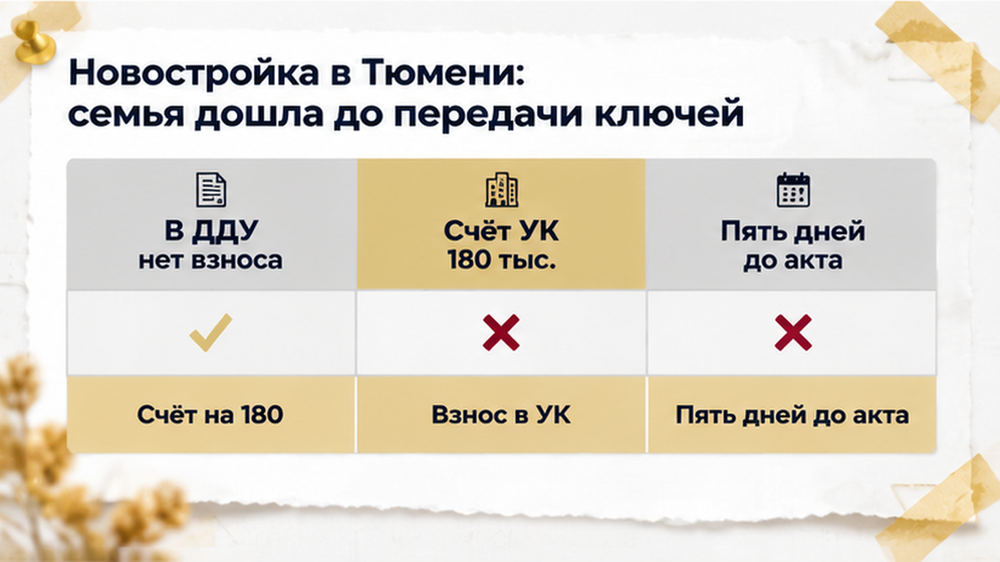
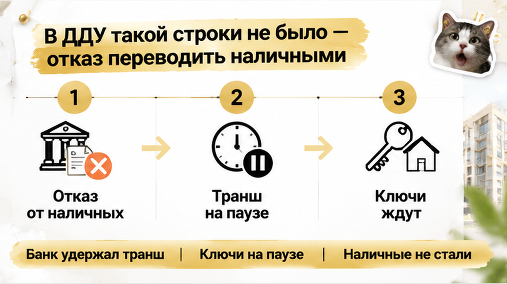
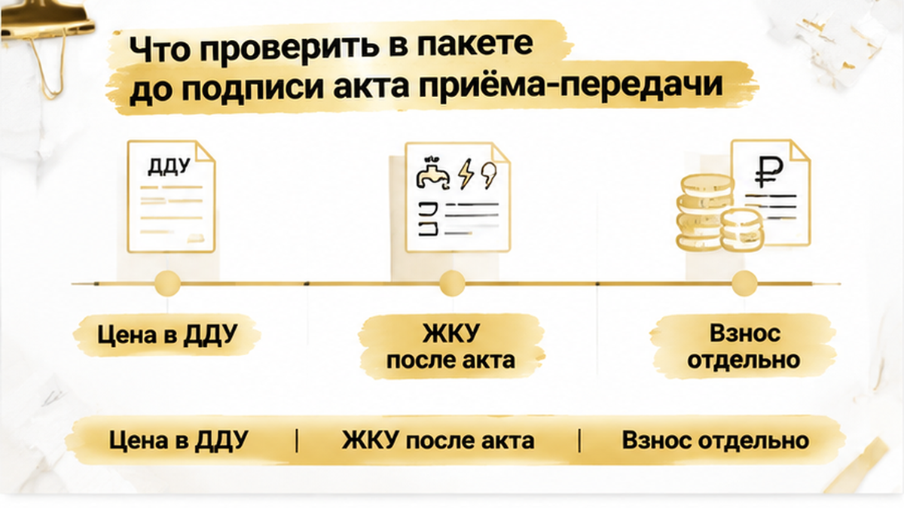
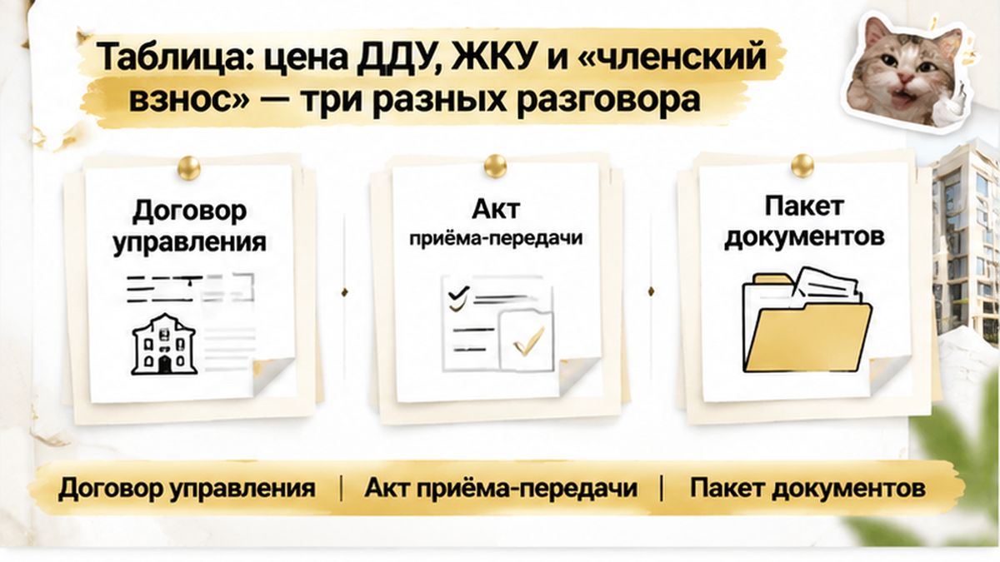

За пять дней до передачи ключей семья в новостройке Тюмени получила счёт примерно на 180 000 рублей — то ли «взнос в УК», то ли «членский взнос». В ДДУ и договоре бронирования этой суммы не было, поэтому покупатели попросили письменное основание и расчёт, а наличные передавать отказались. Ипотечный банк в тот же момент не выпустил финальный транш: пакет документов ещё не признали достаточным. Передача квартиры встала на паузу — прямо перед актом появилась новая сумма, без которой, как объясняли покупателям, всё будто бы не двигалось.
Семья подписала ДДУ, внесла предусмотренные договором деньги, оформила ипотеку и стала ждать передачи квартиры по акту.
До ключей оставались считаные дни, когда покупателям сообщили о дополнительном платеже примерно в 180 000 рублей. В разговоре его называли «взносом в управляющую компанию» или «членским взносом».
Для человека, который уже вложил деньги в квартиру и ждёт финального шага, такая формулировка тревожит. Но тревога — не основание для перевода: сначала нужно понять, что именно оплачивается, кому, по какому документу и почему именно перед подписанием акта.
Покупатели подняли ДДУ и договор бронирования, но отдельной обязанности перечислить 180 тысяч рублей там не нашли. Поэтому попросили письменно показать документ, на котором держится требование, и объяснить расчёт.
Это была не история про дефекты в квартире. В другом разборе покупатели пришли на приёмку и обнаружили вместо обещанной чистовой отделки голые стены: акт приёмки стал вопросом состояния квартиры. Здесь спор возник ещё до передачи объекта и касался денег и условий допуска к ключам.

Срок поджимал: ипотечная сделка подходила к финалу, акт ещё не подписывали, а покупателям уже предложили закрыть отдельный платёж в пользу управляющей компании.
Но название «взнос в УК» само по себе ничего не объясняет. Плата за содержание дома, коммунальные услуги, договор управления и разовый платёж перед ключами — разные вещи. У каждого должны быть основание, получатель, период и расчёт.
По общему правилу расходы за жилое помещение и коммунальные услуги возникают с момента передачи помещения по акту. Поэтому близость ключей не превращает любую сумму в обязательный долг покупателя. Нужно смотреть документы по конкретному дому и сделке.
Проверяется и порядок управления домом: после ввода может действовать временное управление, а управляющая организация — быть выбрана или назначена в установленном порядке. Но это не отвечает на главный вопрос семьи: почему именно перед актом появилась сумма около 180 000 рублей и почему её должны внести эти покупатели.
Пока документы не связывали платёж с условиями ДДУ, бронированием или отдельным соглашением, семья решила не передавать деньги наличными. Важно было понять, можно ли сделать новый платёж обязательным условием передачи квартиры.
Семья сверила документы: в ДДУ и договоре бронирования не было отдельной строки про 180 тысяч рублей — ни «взноса в УК», ни «членского взноса», ни условия «не заплатил — квартиру не передадим».
Покупатели попросили письменно объяснить, кто требует деньги, за что именно и как рассчитана сумма, а затем отказались переводить наличные.
Это не означало отказ от ДДУ: основной договор заключён, ипотека оформлена, деньги проходят через эскроу. Вопрос был только к дополнительным 180 тысячам — платежу, которого в договоре нет и расчёт которого не предъявили.
Цена квартиры и порядок её оплаты должны читаться из ДДУ и его приложений. Новую сумму нельзя превращать в обязательство одним звонком менеджера или фразой «без этого ключи не выдадим». В переписке семья зафиксировала: обязательства по ДДУ она выполнит, но передавать деньги без понятного основания не будет.
Не стоит путать эту ситуацию со спором о качестве квартиры. Иногда акт не подписывают из-за отсутствия обещанной отделки или серьёзных недостатков. В другом разборе в Тюмени вместо заявленной чистовой отделки люди увидели голые стены — акт приёмки стал вопросом состояния квартиры. Здесь же спор начался вокруг денег и условий допуска к ключам.
После отказа платить наличными финальный этап не закрылся. Банк не выпустил последний ипотечный транш: пакет документов пока не признали достаточным. Акт не подписан, ключи не получены, сделка зависла на финише.
Но нет подтверждения, что транш остановили именно из-за «взноса в УК». Известно лишь, что банковская проверка не завершилась, а рядом в это же время стояло требование на 180 тысяч рублей. Поэтому причину нужно запросить у банка письменно: какого документа не хватает, кто его предоставляет и что требуется для перечисления.
Оставался и другой вопрос: почему передача квартиры должна зависеть от платежа, которого нет в ДДУ. По статье 8 закона № 214-ФЗ объект передают по акту или иному документу о передаче. Расходы за коммунальные услуги обычно возникают для собственника с момента подписания акта, а до этого их несёт застройщик.
Это не подтверждает сумму в 180 тысяч рублей и само по себе не делает её обязательной. Слово «членский» тоже ничего не решает: важно понять, за какую услугу платёж, кто его получатель, как сделан расчёт и почему деньги нужно внести до ключей. Название платежа — ещё не его основание.
Семья продолжила переписку с застройщиком и управляющей организацией, запросила документы и отдельно уточнила у банка пакет для финального транша. Бумаги по схеме «сначала заплатите, потом разберёмся» она не подписывала.
Вам требовали оплатить УК или «членский взнос» до ключей, если этого не было в ДДУ? Вы заплатили или остановили приёмку?

В этой истории главный вопрос звучал просто: за что требуют 180 000 рублей, на каком основании и связана ли эта сумма с передачей квартиры? Фразы «так нужно для получения ключей» для ответа недостаточно.
Поднимите ДДУ со всеми приложениями: проверьте цену квартиры, порядок оплаты, срок передачи, дополнительные помещения и обязанности сторон. Затем отдельно посмотрите договор бронирования: его условия иногда пытаются использовать как основание для нового платежа, хотя в основном договоре такой обязанности нет.
В рассматриваемом случае отдельной строки про 180 000 рублей не было ни в ДДУ, ни в договоре бронирования. Поэтому покупатели запросили письменное требование: кто получатель, за что выставлен счёт, как рассчитана сумма и каким документом она подтверждается. Формулировки «взнос в УК» и «членский взнос» сами по себе ничего не объясняют.
Отдельно сверяются реквизиты. Деньги за квартиру, плату по отдельному договору и возможный платёж управляющей организации нельзя смешивать в один перевод без ясного назначения. Проверка реквизитов эскроу до финального этапа — другой сюжет, но принцип тот же: сначала установить, кому и за что уходят деньги.
До подписания акта соберите уведомление о готовности квартиры, проект акта, переписку с менеджером, письменное требование об оплате, договор управления, сведения о выборе управляющей организации и расчёт взноса. Эти бумаги не делают сумму автоматически законной, но показывают, какой договор предлагают подписать и на каком основании требуют оплату.
Если банк должен перечислить финальный транш, запросите у него письменное объяснение по пакету документов именно для этого платежа. В этой истории банк не выпустил транш, пока пакет не был признан достаточным. Почему именно он оказался недостаточным, материалы не подтверждают, поэтому напрямую связывать банковскую паузу с платежом в УК нельзя.
Не подписывайте акт под формулу «сначала заплатите, потом разберёмся». По 214-ФЗ цена и порядок оплаты должны быть связаны с ДДУ, а передачу квартиры оформляют актом. При этом отказ от непонятного платежа не означает автоматическую правоту покупателя: если существует отдельный договор или подтверждённое обязательство, его нужно разбирать по документам.
Для ориентира полезно отделять платёжную историю от других причин банковской паузы. Например, бывает ситуация, когда банк не перечисляет финальный транш из-за документов по объекту. Нужно выяснить, что именно остановило сделку: условие ДДУ, банковский пакет или требование, возникшее перед ключами.

| Что обсуждают | Откуда должна быть понятна сумма | Что проверить до оплаты |
|---|---|---|
| Цена квартиры | ДДУ и его приложения | Размер цены, график платежей, факт оплаты, условия передачи |
| Жилищно-коммунальные услуги | Правила начисления и момент передачи квартиры | Дата акта, период начисления, договор управления и расчёт |
| «Членский взнос» или иной платёж в УК | Отдельный договор, решение или иной документ с понятным основанием | Получатель, назначение, расчёт, добровольность и связь с выдачей ключей |

Цена квартиры должна быть видна из ДДУ и его приложений. Плата за содержание дома и коммунальные услуги — другой разговор: здесь важны договор управления, период начисления и дата передачи помещения по акту.
«Членский взнос» или другой платёж в управляющую организацию — третья история. Для него нужны понятные получатель, назначение, расчёт и документ-основание. Само слово «членский» не объясняет, какую услугу оплачивают и почему деньги нужно внести до ключей.
Жилищный кодекс связывает оплату жилого помещения и коммунальных услуг с моментом передачи помещения по акту. Поэтому сумму, выставленную до подписания акта, нельзя просто назвать коммуналкой. Но и обратное утверждение — что любой платёж до ключей автоматически незаконен — требует проверки документов.
В этой истории семья получила требование примерно на 180 000 рублей за пять дней до передачи ключей. В ДДУ и договоре бронирования такой обязанности не было. Покупатели остановили передачу денег по непонятному требованию, запросили расчёт и уточнили банковский пакет.
Это нормальная позиция покупателя: не платить вслепую, но и не считать вопрос решённым только потому, что сумма кажется необоснованной. Зафиксируйте переписку, получите письменные документы, отдельно поговорите с банком и выясните, какой шаг мешает завершить сделку.
Если проблема в формулировке или документах, после их исправления сделку можно продолжить. Если другая сторона ссылается на отдельное обязательство, его нужно оценивать по договору, расчёту и порядку заключения. Агентность здесь в том, чтобы не подписывать неизвестное условие под давлением даты ключей.
Если перед ключами вам выставили отдельный счёт, не переводите деньги вслепую. Сверьте ДДУ и договор бронирования, попросите письменное основание и расчёт, а требования банка уточните отдельно. Разобрать документы по новостройке в Тюмени можно в Telegram или MAX. Телефон для связи: +7 922 001 65 05.